"Exploring AI, machine learning, language, and intelligent systems to build practical solutions to real-world challenges."
I'm a Data Science undergraduate exploring Artificial Intelligence, Machine Learning, and Software Engineering to build intelligent, practical solutions for real-world challenges — from predictive pipelines and computer vision to scalable full-stack architectures.
SAHIL KAVISHKADATA SCIENCE UNDERGRADUATESabaragamuwa Univ. of Sri Lanka
RESEARCH TELEMETRY HUD
NODE OPERATIONAL
ACADEMIC STATUSBSc (Hons) in Data Science Sabaragamuwa Univ. of Sri Lanka
PRIMARY DIRECTIVEAI Systems · ML Pipelines · Full-Stack
ACTIVE BUILDSmartBuild AI (FastAPI + XGBoost + Gemini)
BASE LOCATIONAnuradhapura, Sri Lanka (GMT+5:30)
PUBLIC REPOSITORIES18
AVAILABILITYOpen for Research & ML Internships
01 // TOPOLOGY
Interactive Technology Universe
Explore how core AI disciplines, mathematical modeling, and engineering systems intersect across my research and builds. Select any of the 10 interconnected domains to inspect verified stack telemetry and linked projects.
GRAPH v3.0 // 10 CONNECTED DOMAINS
COGNITIVE ARCHITECTURES
Artificial Intelligence
Developing agentic systems, generative intelligence, and automated decision engines that bridge mathematical models with real-world client workflows.
Production platforms, research experiments, and collaborative hackathon initiatives. Inspect architectural case studies, verified problem statements, and real codebases.
16 VERIFIED SYSTEMS // 5 FEATURED CASE STUDIES
FLAGSHIP PLATFORMACTIVE LAB BUILD · 25 DISTRICTS
SmartBuild AI — Construction Intelligence Platform
An AI-powered architectural CAD, computer-vision floor-plan analyzer, and CIDA-indexed cost estimation platform for Sri Lanka's residential construction sector — bridging architectural studio drafting, material forecasting, and multi-bank loan feasibility in a unified system.
The Problem: Residential builders suffer from unpredictable material price inflation, manual quantity surveying errors, and high loan rejection rates due to misaligned debt-service-ratio (DSR) documents.
Technical Approach: Procedural Three.js WebGL CAD generation from plot dimensions, backed by an XGBoost regressor modeling non-linear CIDA material price constraints across all 25 Sri Lankan districts.
Sahil's Role: Architected the system, built the XGBoost regional price forecasting model, and implemented the multi-bank 45% DSR loan eligibility underwriting matrix (BOC, Commercial Bank, HNB, Sampath, NSB).
Verified Outcomes: Captures district-level transport cost variance from Colombo supply ports, preventing severe under-bidding on cement and steel.
CropSafe AI — National Fertilizer Quality & Economic Loss Forecasting
Sri Lanka's national fertilizer authenticity and yield-loss prediction intelligence platform, ground-truthed on 2,002 empirical laboratory test certificates spanning all 9 provinces.
The Problem: Counterfeit agricultural fertilizers cause smallholder farmers harvest deficits exceeding 20% and catastrophic financial ruin across vulnerable agricultural districts.
Technical Approach: Champion LightGBM adulterant classifier with sub-2ms inference, dual Gradient Boosting regressors for yield deficits (%) and monetary damage (LKR/ha), and Isolation Forest chemical anomaly detection.
Sahil's Role: End-to-end research, dataset curation of 2,002 laboratory certificates across 9 provinces, feature engineering, model evaluation, and provincial GIS decision engine.
Verified Results:94.6% Test Accuracy on fertilizer classification; R² > 0.96 on crop yield loss estimation; deployed interactive Streamlit decision dashboard.
A statistically calibrated, trustworthy clinical machine learning pipeline for predicting 30-day unplanned hospital readmissions with demographic fairness guarantees.
The Problem: Black-box clinical ML models suffer from probability miscalibration, demographic bias across sex and age strata, and heavy tail loss on clinical decision support.
Technical Approach: Tri-model stacking ensemble blending CatBoost, LightGBM, and Lasso Logistic Regression via SLSQP constrained optimization; Platt Sigmoid calibration [0.0248, 0.7280]; and Shannon Entropy selective classification deferring ambiguous cases.
Sahil's Role: Clinical risk feature engineering (AKI, cardiorenal syndrome, polypharmacy), ensemble blending optimization, Platt probability calibration, and fairness auditing.
3D WEBGL ENGINE60 FPS BROWSER ENGINE · OPEN SOURCE
Sinharaja — The Lost Expedition: 3D Tactical Survival Game
A browser-based, First-Person 3D Tactical Survival & Forensic Mystery Game engineered entirely in React and Three.js (WebGL) running at a locked 60 FPS without external desktop game engines.
The Problem: Traditional cultural and educational simulation games require heavy desktop installers and bulky commercial engines (Unity/Unreal), preventing zero-install web accessibility.
Technical Approach: Custom procedural terrain rendering, dynamic flashlight & UV beam lighting, AABB/Raycasting collision physics, real-time leech blood loss, hypothermia management, toxic gas vents, and procedural Web Audio API synthesis.
Sahil's Role: Engineered procedural 3D terrain, collision physics, survival mechanics, Web Audio sound synthesis, endemic wildlife forensic journal, and real-time Sinhala/English localization.
Verified Results:Smooth 60 FPS execution entirely client-side in standard web browsers with zero installation; open source on GitHub.
A hybrid restoration framework combining a 7-stage classical digital signal processing pipeline with a deep residual neural backbone (NAFNet-APEX) for sensor noise restoration.
The Problem: Low-light smartphone camera sensors exhibit severe Poisson photon-shot noise, Gaussian read noise, CFA chromatic blotching, and dark-current hot pixels.
Technical Approach: Dual-Engine Framework: Engine A (7-Stage Classical DSP for CPU: Adaptive Rank-Order Defect Suppression, Anisotropic Diffusion, Dual-Basis DWT BayesShrink, NLM, Laplacian detail fusion) and Engine B (Deep Residual Backbone NAFNet-APEX v10 with 86.49M params, compound Charbonnier + D-SSIM loss).
Sahil's Role: Classical DSP filter architecture, assisted in NAFNet compound loss formulation, PSNR/SSIM evaluation, and verified offline CPU fallback.
Verified Results:32.42 dB PSNR and 0.9205 SSIM; Composite Score: 0.6863 (+160.6% relative gain over baseline).
Search by keyword or filter by domain to explore full codebases, data engineering pipelines, stochastic studies, and collaborative platforms.
CAPSTONE // DS3206·DS410594.6% TEST ACC
AI · AGRI-TECH CAPSTONEACADEMIC RESEARCH
CropSafe AI — Fertilizer Quality & Economic Loss Forecasting
National fertilizer authenticity intelligence platform ground-truthed on 2,002 lab certificates across all 9 Sri Lankan provinces. LightGBM fraud classifier (94.6% accuracy, <2ms latency) paired with yield deficit regressors (R²>0.96) and black-market anomaly detection.
First-person 3D tactical survival & forensic mystery game set in Sri Lanka's Sinharaja rainforest. Built from scratch with React & Three.js (WebGL) running at 60 FPS — featuring raycasting physics, leech blood loss mechanics, hypothermia, UV beams, and procedural Web Audio API synthesis.
Secured 3rd Place globally in the ML & AI Nexus 2026 Hackathon. Tri-model stacking ensemble (CatBoost, LightGBM, Lasso Logistic Regression) predicting unplanned hospital readmissions with Platt Sigmoid calibration slope ~0.99, demographic fairness auditing, and Shannon Entropy uncertainty quantification.
CatBoostLightGBMPlatt ScalingKaggleBiostatistics
MORA SP CUP 202632.42 dB PSNR
COMPUTER VISION · SIGNAL PROCESSINGTEAM ZENTRIX
Hybrid Dual-Engine Low-Light Image Denoising
IEEE SPS University of Moratuwa challenge solution combining a 7-stage classical DSP pipeline (Dual-Basis DWT BayesShrink, NLM, Guided Filter, Anisotropic Diffusion) with an 86.49M-parameter Deep Residual NAFNet-APEX v10 backbone — achieving 32.42 dB PSNR (+160.6% relative gain over baseline).
PyTorchNAFNetClassical DSPOpenCVCUDA
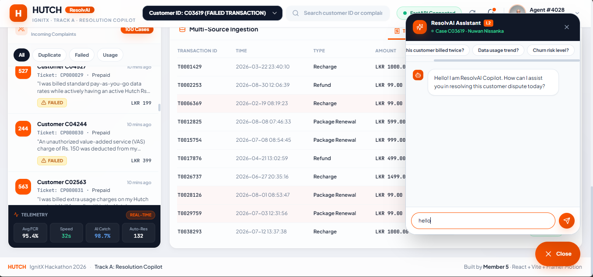
ENLARGE ↗
IGNITX · HUTCH AIFASTAPI & COPILOT UI
NLP & TELECOM AIHUTCH HACKATHON 2026
ResolvAI — Multi-Source Resolution Copilot
AI-powered telecom customer complaint resolution copilot engineered for IgnitX Hutch Hackathon 2026. Combines rule-based verification with AI-generated explainability to resolve billing discrepancies and triage inquiries. Built backend API microservices and frontend interface.
FastAPIPythonNLPScikit-LearnHutch AI
CHROME EXTENSION V3BERT WEIGHTED
NLP · TRANSFORMERSSHIPPED EXTENSION
AI Review Insight: Daraz Chrome Extension & BERT
End-to-end NLP product scraping thousands of GSMArena reviews, benchmarking classic ML against fine-tuned BERT (WeightedTrainer), and packaged into a production Chrome Extension V3 with lazy-load DOM parsing and automated aspect-based PROS and CONS extraction on Daraz.lk.
PyTorchBERTFastAPIChrome ExtensionNLTK
AI STYLE STUDIOGEMINI AI + QR PASS
FULL-STACK · AI CONSULTANTCOMPLETE
Salonora — AI Salon Discovery & Booking Platform
Smart salon platform integrating Google Gemini AI for personalized hair styling and skincare recommendations with voice narration, real-time appointment scheduling, contactless digital QR Check-In Pass, distance GPS sorting, and role-based owner/client portals.
PHP (MVC)MySQLGemini APIJavaScriptQR Engine
TOURISM MACRO MODELRANDOM FOREST REG
PREDICTIVE ML · DATA SCIENCESTREAMLIT DEPLOYED
Ceylon Forecast Engine — Sri Lanka Tourism Predictor
AI-driven monthly tourist arrival forecasting platform. Incorporates LKR/USD exchange rates, Consumer Price Index (CPI) inflation, and seasonal cyclicality. Deployed on Streamlit featuring interactive What-If scenario simulations and joint sensitivity heatmaps.
PythonPandasScikit-LearnStreamlitPlotly
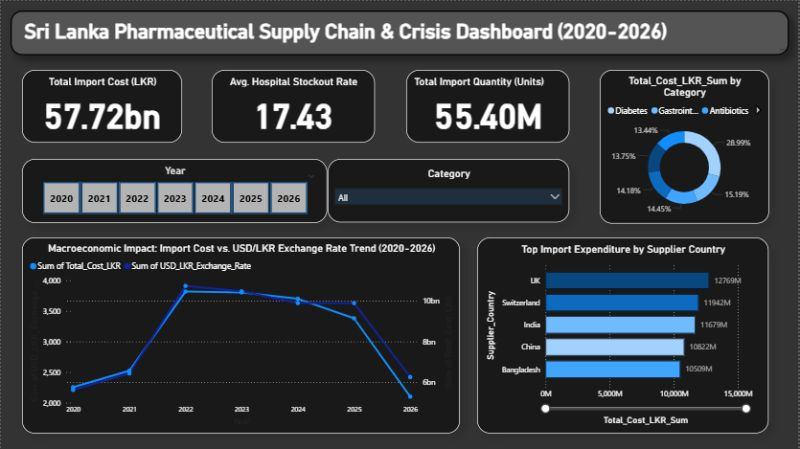
ENLARGE ↗
LKR 57.72B IMPORTSSTAR SCHEMA BI
DATA WAREHOUSING · BICOMPLETE
Medicine Supply Chain C-Level Analytics & Simulation
Enterprise Power BI platform modeling LKR 57.72B pharmaceutical imports, USD/LKR exchange shocks, and hospital stockouts from 2020–2026. Features automated Star Schema, DAX What-If +35% crisis surge simulations, and ArcGIS global supplier tracking.
Power BIAdvanced DAXStar SchemaArcGISPython
TECH JOB MARKETRANDOM FOREST
MACHINE LEARNING · WEB APPCOMPLETE
Sri Lanka Salary Predictor 2025
Machine Learning web application trained on latest Sri Lankan tech and engineering market compensation data. Estimates earnings by role, experience, industry, and city (Colombo, Kandy, Galle) with instant downloadable PDF/text reports.
PythonScikit-LearnStreamlitPlotlyPandas
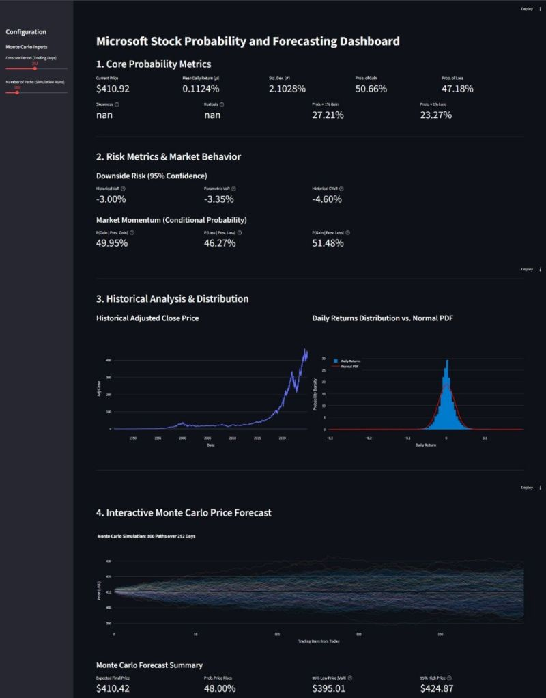
ENLARGE ↗
40-YEAR MARKET STUDYMONTE CARLO & MARKOV
FINANCE ANALYTICS · PROBABILITYCOMPLETE
Microsoft Stock Analysis Using Probability Theory (1986–2025)
Deep-dive mathematical exploration across nearly 40 years of daily MSFT data. Implements theoretical distribution fitting (Normal, Student's t), Markov regime transitions, Bayesian volatility reasoning, VaR/CVaR risk metrics, and Monte Carlo trajectory forecasting.
PythonNumPyPandasMatplotlibStochastic Calculus
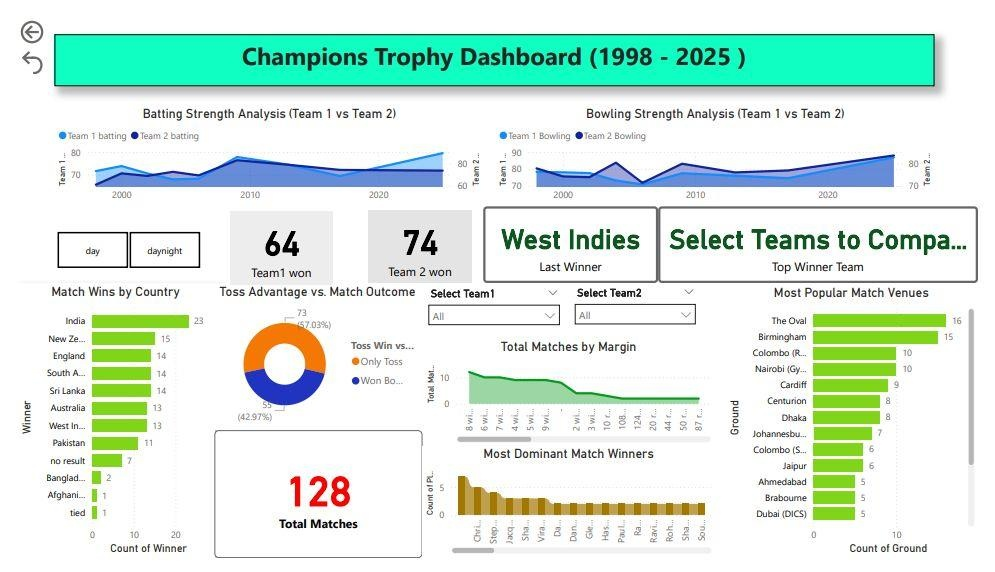
ENLARGE ↗
1998 – 2025 INSIGHTSADVANCED DAX
SPORTS ANALYTICS · POWER BICOMPLETE
ICC Champions Trophy Historical Analytics Dashboard
Interactive executive-level Power BI platform analyzing international match datasets from 1998 to 2025. Features Overall Dominance Tracker, automated DAX Head-to-Head Dominator KPI card, multi-decade batting strength trends, and global venue popularity treemaps.
Power BIDAXData ModelingSports Analytics
FULL-STACK DJANGOOTP AUTH & RBAC
FULL-STACK · PREDICTIVE MLACTIVE
Sports Tournaments Management System
Centralized platform for organizers, players, and spectators with role-based access, OTP security, tournament search/filtering, and relational MySQL schemas, paired with match-outcome predictive models over REST APIs.
DjangoMySQLScikit-learnBootstrapPython
894+ MASTER RECORDSYOUTUBE API V3
ETL PIPELINE · ANALYTICSCOMPLETE
EdTech Market Intelligence Pipeline
Automated data pipeline over YouTube Data API v3 analyzing Sri Lanka's EdTech ecosystem — engineering view velocity, viral multipliers, NLP medium detection, and engagement tiers published to an open Kaggle dataset.
PythonYouTube APIPandasPower BI
CLOUD ML PIPELINEXGBOOST + FLASK
CLOUD ML · DATA SCIENCECOLLABORATIVE
AWS Customer Churn Predictor
Cloud-integrated customer churn prediction engine utilizing rolling consumption velocity features, tree-based ensemble models, and AWS deployment pipelines.
AWSPythonXGBoostFlaskScikit-Learn
EDTECH ANALYTICSPLOTLY.JS SUITE
ANALYTICS · VISUALIZATIONCOMPLETE
Math Quiz Analytics Dashboard
Educator analytics dashboard for timed quizzes with cohort performance distributions, skill-gap detection by topic, and student leaderboards.
HTML5/JSPlotly.jsSQLPython
No systems match that category or search keyword. Try clearing the filter or searching for another stack term.
03 // EXPERIMENTATION
Mini AI Laboratory
Genuinely functional, zero-latency in-browser machine learning and NLP demonstrations. No fake responses; inspect live token parsing, sentiment vectors, and 2D spatial decision frontiers.
STANDALONE IN-BROWSER EXECUTION
TEST PRESETS:
Inference: 0.00 ms (Client-Side)
LAB SPECIFICATION: Demonstrates real-time client-side lexical decomposition, negation tracking, and intent scoring in JavaScript. In production projects (e.g. Sahil's GSMArena review classifier and ResoveAI), this frontend triage connects to fine-tuned BERT and PyTorch FastAPI microservices.
Click anywhere in coordinate space to plot new points.Feature 1 (x₁) vs Feature 2 (x₂)
KNN Hyperparameter (k)k = 3
Total Samples12
Training Accuracy100%
MATHEMATICAL GROUNDING: Executes client-side vector calculus in real time. The canvas renders decision partitions using k-nearest neighbors classification over a fine feature grid, displaying the spatial intuition underlying Sahil's classification models.
04 // METHODOLOGY
Inside the Model
The 7-stage machine learning lifecycle practiced across my research and engineering projects — from mathematical loss formulation to containerized deployment.
PIPELINE SPECIFICATION v3.1
STAGE 01 // OBJECTIVE MAPPING
Translating Real Constraints Into Quantifiable Loss Functions
Every AI project in the lab starts not with a model, but with defining the decision boundary and performance metrics that matter. We map business, financial, or engineering bottlenecks into mathematical optimization objectives.
REAL CASE STUDY · SMARTBUILD AI
In residential construction, material costs differ drastically across Sri Lanka’s 25 districts due to distance from Colombo supply ports. Rather than optimizing a generic national mean squared error, we partitioned regional error thresholds to prevent drastic under-bidding on cement and steel.
A transparent log of what is currently under active development, technologies I am mastering, and future horizons in physical computing and robotics.
AUTONOMOUS LAB FEED
Active Lab Builds
SmartBuild AI CAD StudioIN PROGRESS
Refining procedural 2D/3D floor-plan generation in Three.js and stress-testing computer-vision wall detection on architectural blueprints.
WebSocket Tournaments MigrationIN PROGRESS
Migrating the Sports Tournaments platform from AJAX polling to bi-directional WebSockets for real-time fixture updates and match predictions.
Current Learning Vector
AWS Machine Learning SpecialtySTUDYING
Preparing for certification alongside cloud deployment pipelines, SageMaker feature stores, and containerized endpoints.
Advanced PyTorch & MLOpsEXPANDING
Mastering model quantization, ONNX runtime export for edge devices, and automated CI/CD evaluation pipelines.
Robotics & IoT Horizon
Physical Computing FoundationsEXPERIENCED
Conducted hands-on physical computing sessions with BBC Micro:bit boards for school students through IEEE WIE HOPE 2.0.
Sensor Telemetry & ROS RoadmapFUTURE HORIZON
Targeting integration of edge AI models with microcontrollers, environmental sensor matrices, and Robot Operating System (ROS) node communication.
06 // FIELD EXPEDITIONS
Field Operations & Community Expeditions
Hands-on STEM outreach, physical computing workshops with BBC Micro:bit microcontrollers, youth coding mentorship, and university leadership across Sri Lanka. Click any field record to inspect full telemetry.
12 VERIFIED EXPEDITION RECORDS
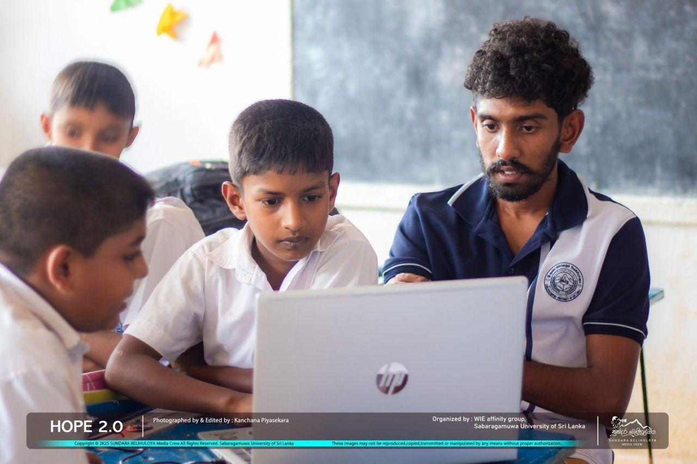
EXPEDITION 01 // HOPE 2.0
Karagasthalawa School · IEEE WIE
Inspiring with BBC Micro:bit
Hands-on hardware interaction introducing algorithmic thinking and sensor logic to young minds.
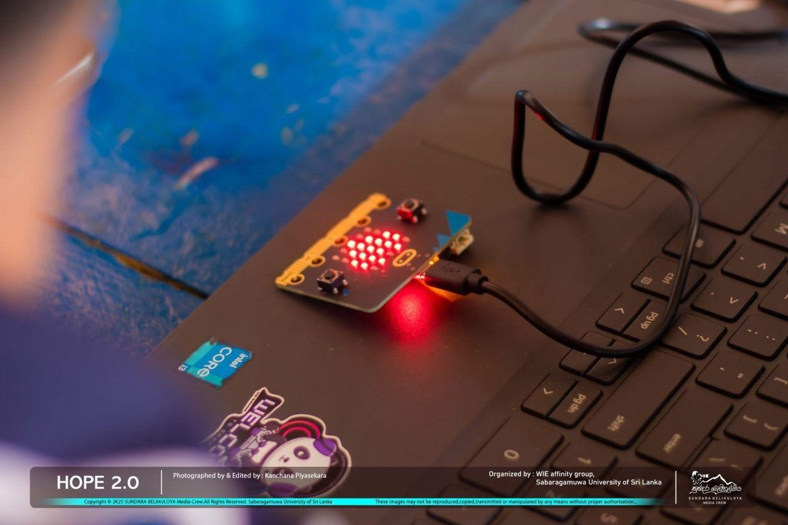
EXPEDITION 02 // ENGAGEMENT
Karagasthalawa School · STEM
Classroom Coding Discovery
Fostering active curiosity as students connect block programming with real hardware action.
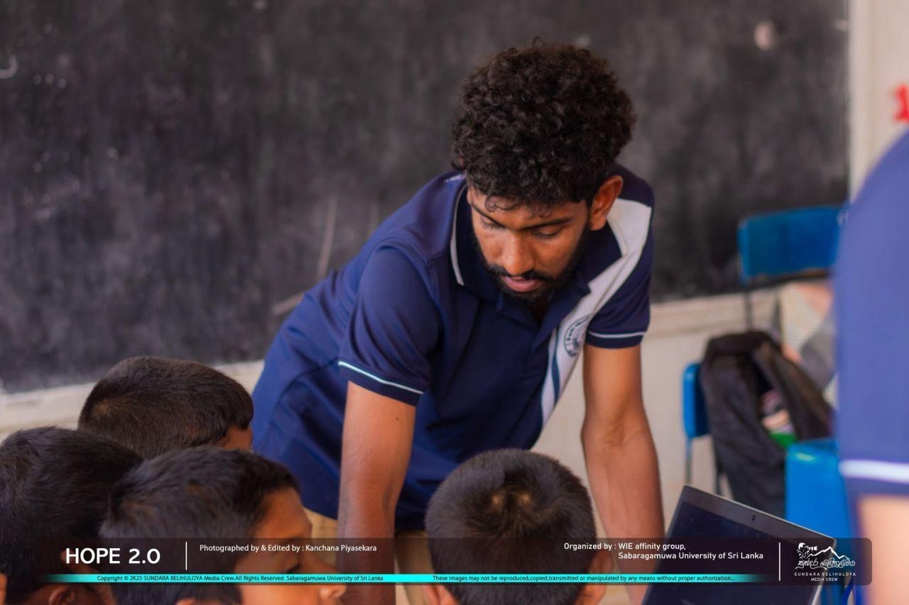
EXPEDITION 03 // OUTREACH
Regional Outreach · IEEE WIE
Bridging Regional Tech Literacy
Empowering rural schools with digital literacy programs and interactive computing equipment.
EXPEDITION 04 // CODE CLUB
Ratnapura Library · Code Club
Foundational Coding Mentorship
Guiding youth through foundational programming syntax and visual problem-solving workflows.
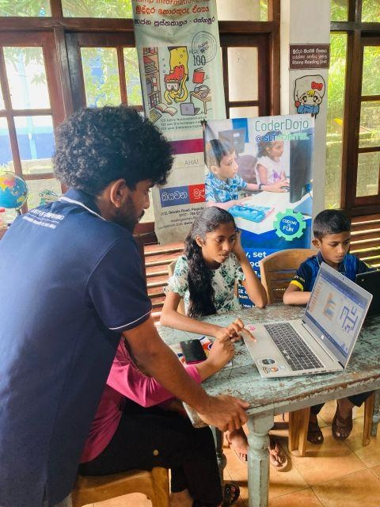
EXPEDITION 05 // LAB SESSION
National Library · Digital Literacy
Practical Computing Workshop
Hands-on student code debugging and interactive visual problem-solving at the library lab.
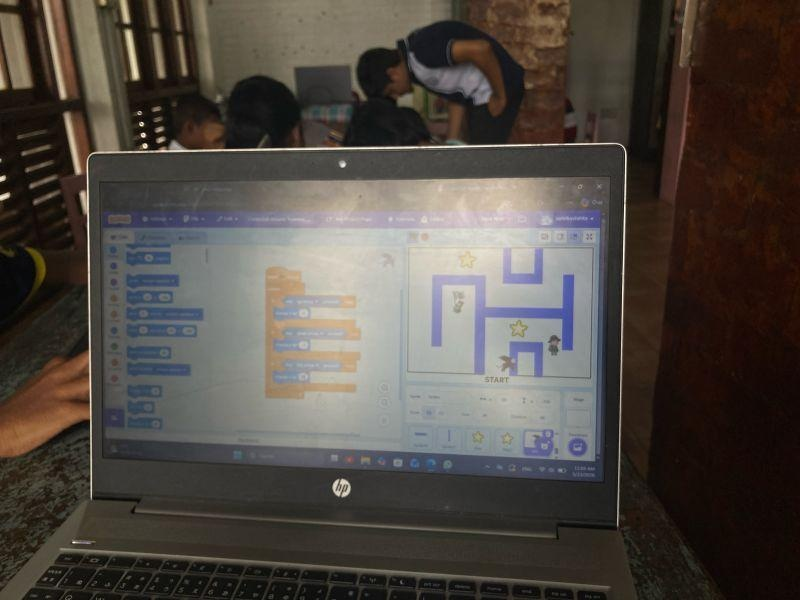
EXPEDITION 06 // SCRATCH LOGIC
Scratch Lab · Youth Literacy
Creative Computational Logic
Empowering students to engineer visual maze mechanics and interactive computational algorithms.
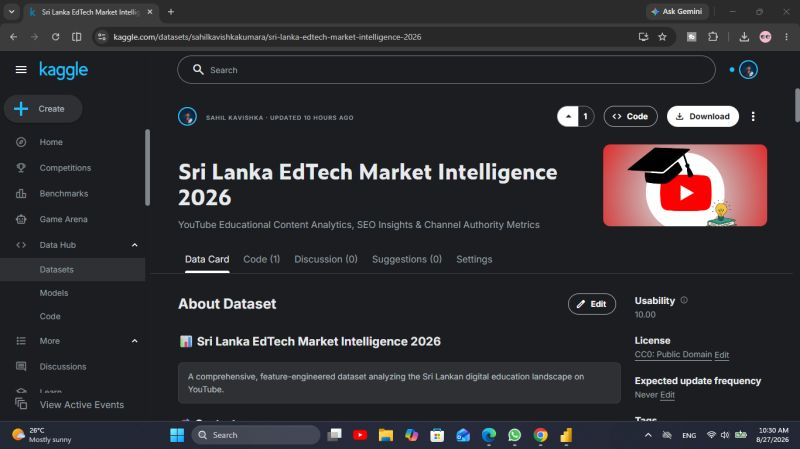
EXPEDITION 07 // INDUSTRY
IEEE SUSL · Zone24x7 Partnership
Industry Connect & Career Readiness
Direct engagement with enterprise engineering leadership on ATS standards and technical portfolios.
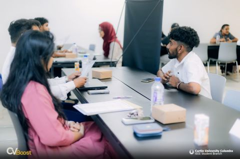
EXPEDITION 08 // FORUM
Main Auditorium · Career Strategy
Career Readiness Masterclass
Practical strategies for ATS resume optimization, engineering interviews, and tech networking.
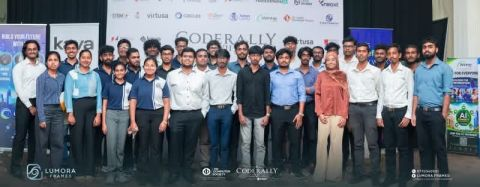
EXPEDITION 09 // HACKATHON
Hutch Sri Lanka · IgnitX Hackathon
ResolvAI Hackathon Sprint
Intense engineering sprint building AI-powered telecom resolution copilots under hackathon pressure.
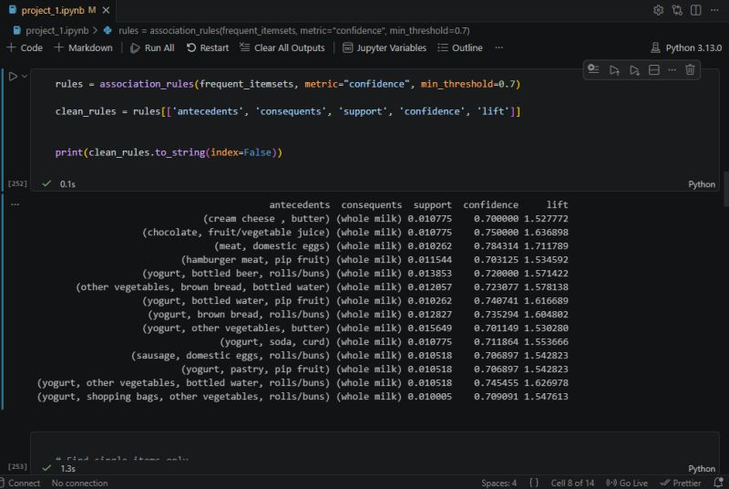
EXPEDITION 10 // NEXORA
IEEE Student Branch · Leadership Summit
NEXORA 1.0 Program Team
Executing flagship technology conferences, technical track logistics, and speaker relations.
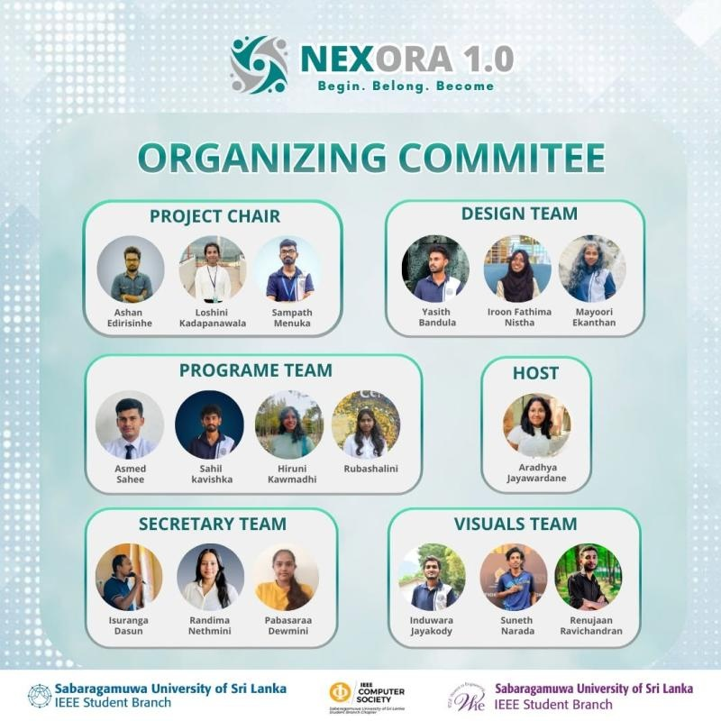
EXPEDITION 11 // LEADERSHIP
IEEE Executive Committee · SUSL
Tech Community Stewardship
Driving IEEE technical student chapters, workshops, and volunteer initiatives.
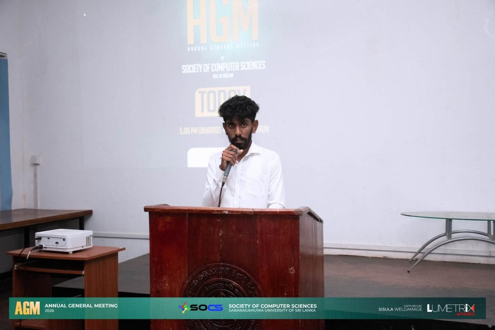
EXPEDITION 12 // ITEX 2.0
SOCS · IT Day Exhibition
ITEX 2.0 Project Exhibition
Demonstrating practical software systems and data-driven applications at the university innovation expo.
07 // IDENTITY
About Sahil Kavishka
Data science undergraduate at Sabaragamuwa University of Sri Lanka, Secretary of the Society of Computer Sciences, curious explorer, and practical problem solver.
RESEARCHER PROFILE
SAHIL KAVISHKABSc (Hons) Data Science · SUSLAnuradhapura, Sri Lanka
Exploring Intelligent Systems & Engineering Possibilities
I am an emerging technology professional reading for a BSc (Hons) in Data Science at Sabaragamuwa University of Sri Lanka. Rather than confining myself to a single vertical, I approach computing as an interconnected discipline — bridging exploratory machine learning and statistical modeling with robust, scalable software engineering.
Whether engineering calibrated stacking ensembles for healthcare readmissions, training regional gradient-boosted regressors on 2,002 fertilizer lab certificates, constructing 3D WebGL survival engines at 60 FPS, or architecting dimensional data warehouses during economic shocks, I focus on solving tangible, high-impact challenges through practical experimentation.
I value scientific curiosity, architectural rigor, clean code, and continuous learning above all else.
18
Public Repos
SUSL
Data Science
GMT+5:30
Timezone
<24h
Response Time
Core Philosophy:"Without data, you're just another person with an opinion." — W. E. Deming.
EVOLUTION // FULL-STACK DEV → DATA SCIENTIST → AI SYSTEMS
Engineering Journey & Growth Trajectory
How practical web foundations evolved into mathematical data science, predictive pipelines, and agentic AI architectures.
STAGE 01 // FOUNDATIONS
Full-Stack Web Foundations
Started with practical, client-facing web applications. A PHP & MySQL salon booking system taught core CRUD operations, database indexing, authentication, and administrative dashboards.
PHPMySQLJavaScriptAuth / CRUD
STAGE 02 // SCALE
Role-Based Platforms at Scale
Transitioned to Django and React to build the Sports Tournaments platform — architecting multi-role access controls, automated tournament brackets, and live match scoring for organizers, players, and spectators.
DjangoPythonReactRole-Based Systems
STAGE 03 // DATA SYSTEMS
Layering Machine Learning & BI
Layered machine learning and dimensional warehousing onto operational software — sports match-outcome classification, quiz cohort analysis, and a Star-Schema Power BI warehouse tracking Sri Lanka's medicine supply chain.
Scikit-learnPower BIStar SchemaPandas
STAGE 04 // ACTIVE NOW
AI-Agentic & Multimodal Platforms
Synthesizing LLM agents, computer vision, and gradient-boosted regressors into SmartBuild AI — while mastering PyTorch, containerized MLOps, WebSocket concurrency, and edge physical computing.
FastAPIGemini APIXGBoostThree.jsMLOps
CAPABILITIES // GROUPED BY PURPOSE
Technical Competencies
Core Languages
PythonSQLJavaScript (ES6+)RBashPHP
Machine Learning & AI
Scikit-learnXGBoostPyTorchHugging Face (BERT)Gemini APINLTK
Data Analytics & Pipelines
PandasNumPyPower BIStar SchemaPostgreSQLYouTube API
Full-Stack & Systems
FastAPIDjangoThree.jsDockerGit / GitHubMicro:bit
TOOLKIT // DAILY OPERATIONAL ENVIRONMENT
Active Toolkit & Workstation Instruments
The actual software, command-line environments, and instruments open on my machine while engineering.
EDITORPRIMARY
VS Code
Configured with Pylance, ESLint, and GitLens for strict type checking and commit provenance.
VERSIONINGCI/CD
Git + GitHub
Disciplined feature branching, semantic commits, and PR review habits across all repositories.
API TESTINGREST SUITE
Postman
Dedicated integration collections and automated schema assertions for FastAPI and Flask endpoints.
CONTAINERSPARITY
Docker
Local development parity and reproducible environments for multi-service Python microservices.
NOTEBOOKSANALYSIS
Jupyter
Rapid mathematical experimentation, feature correlation, and hyperparameter sweeps before API export.
BI & WAREHOUSESTAR SCHEMA
Power BI
Interactive data visualizations, star schema relationships, and executive reports for stakeholders.
DESIGNPROTOTYPING
Figma
Information architecture diagrams and UI wireframes before writing frontend stylesheets and HTML.
SHELLLINUX-FIRST
WSL2 + zsh
Linux-first shell environment with customized scripts for data munging, SSH, and server management.
Leading executive student governance, faculty communications, technical workshops, and industry networking initiatives for the university computing and data science student community.
HONOR & AWARDAWS Community
Certificate of Outstanding Achievement
AWS Student Builder Group · SUSL
Awarded for active engagement, valuable contributions, and community leadership in promoting AWS cloud computing and tech innovation among undergraduates.
STEM OUTREACHHOPE 2.0
STEM & Micro:bit Coding Trainer
IEEE WIE · Karagasthalawa School
Conducted hands-on physical computing sessions with BBC Micro:bit boards for school students, introducing sensor telemetry and algorithmic thinking.
ORGANIZING TEAMNEXORA 1.0
Program Team Member — NEXORA 1.0
IEEE Student Branch · IEEE CS SUSL
Contributed to program conceptualization, session logistics, and event coordination for NEXORA 1.0, a premier technology leadership conference.
MENTORSHIPCode Club
Volunteer Coding Mentor
Code Club Sri Lanka · Ratnapura Library
Mentored young learners in foundational programming, visual problem-solving, and digital literacy to empower youth through accessible tech education.
COMPETITIVE FINALSTeam Code Wave
Competitive Programming Finalist
J'Pura Xtreme 3.0 & CodeRally 7.0
Qualified as University Category Finalist in J'Pura Xtreme 3.0 (IEEE USJ / Buildr Labs) and 24-Hour Grand Finale Finalist in CodeRally 7.0 (IEEE CS SUSL).
08 // ACCREDITATIONS
Verified Accreditations & Competitive Honors
External industry, university, and competitive certifications validating technical mastery, algorithmic rigor, and soft-skills excellence.
Mastered interactive BI dashboard principles, KPI architecture, dimensional data exploration, and executive visualization techniques.
ICEH 2026 // IEEERESEARCH WEBINAR
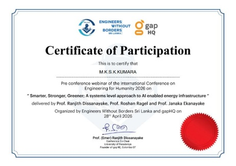
VIEW CERTIFICATE ↗
ICEH 2026 — Engineering for Humanity
Participated in global research discussions on technology for human development, AI ethics, sustainable computing, and assistive technologies.
09 // FIELD NOTES
Research Dispatches & Engineering Notes
Documenting decisions, architectural trade-offs, and empirical findings — focusing on why systems are built the way they are.
TECHNICAL PREPRINTS
AGENTIC AI · ARCHITECTUREFIELD NOTE 01
Building SmartBuild AI: What "Agentic" Actually Means in a Construction Estimator
Why the banking feasibility underwriting matrix and the conversational AI consultant operate as isolated microservices rather than a single monolithic prompt — and what broke when I first tried it the other way.
NLP · BENCHMARKSFIELD NOTE 02
Classic ML vs. Fine-Tuned BERT: Where Complexity Earns Its Latency
A practical benchmark on scraped GSMArena smartphone reviews — evaluating inference latency against F1-score gains to find where a Random Forest is enough and where transformers are non-negotiable.
BI · DIMENSIONAL WAREHOUSINGFIELD NOTE 03
Designing a Star Schema to Survive Hospital Emergency Decision-Making
Lessons from modeling Sri Lanka's pharmaceutical import manifests, foreign exchange volatility, and district medical supply distributions into a Power BI model that withstands high-pressure queries during national stockout risks.
Interested in technical write-ups and benchmark releases?
Receive an email dispatch when new architectural analyses or benchmark preprints are published.